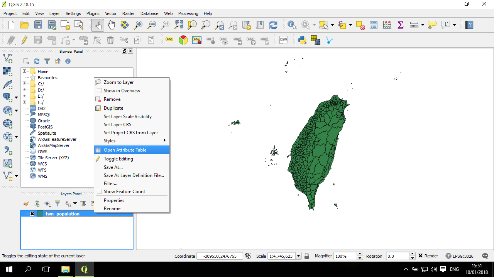
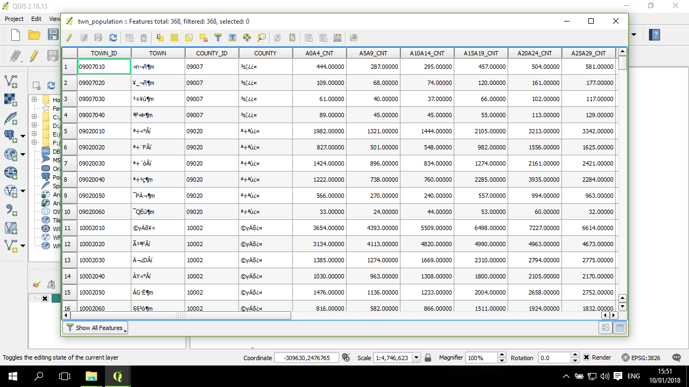
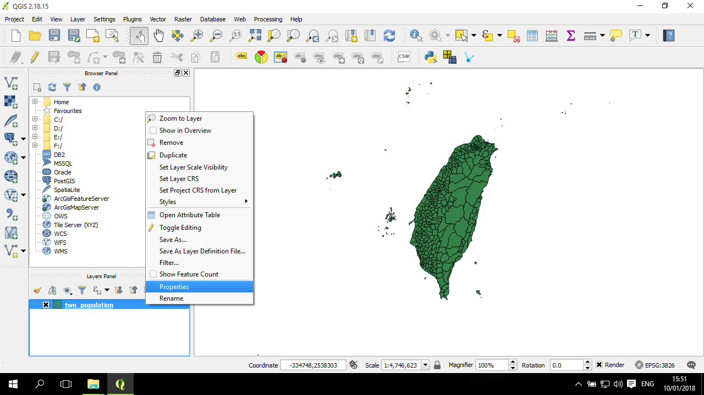
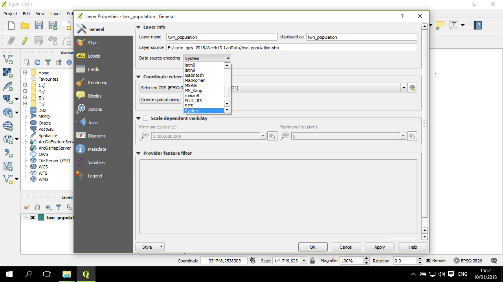
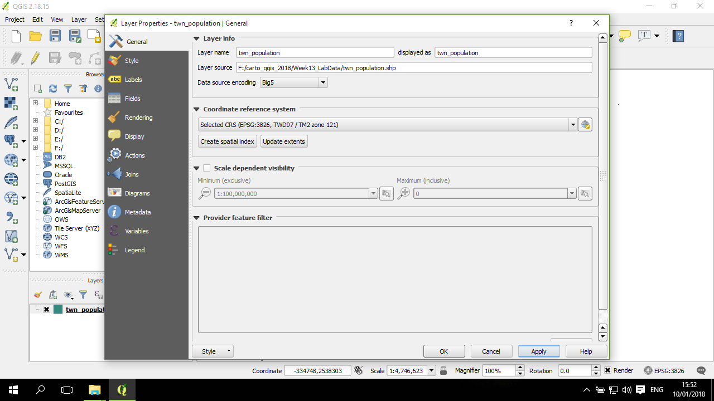

中文編碼 (encoding)
編碼在處理台灣的地圖時常常是一個問題，如果用錯編碼，軟體會在有中文字的地方呈現出亂碼。所以需要設定好編碼。 以教學的台灣鄉鎮圖層檔案來說，資料集的編碼是 Big-5。如果用預設的編碼打開圖層，會出現亂碼。
在這些操作中，使用者需要知道檔案本身是用哪種編碼作儲存，否則就需要一個個測試。台灣常用的編碼包括 Big5 及 utf-8。
對圖層打開屬性表：

屬性表在縣市與鄉鎮的欄位都出現亂碼：

點開圖層的 properties：

在 General 頁面，Data source encoding 右方的下拉選單，預設是 System：

找到 Big5 並選取，然後按套用 (Apply) 與 OK：
